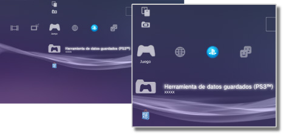

Juego > Categoría Juego
Categoría Juego
En el menú  (Juego) se muestran los siguientes iconos. Los iconos pueden variar en función de las condiciones de uso.
(Juego) se muestran los siguientes iconos. Los iconos pueden variar en función de las condiciones de uso.

 |
PlayStation®Store | Consulte la información de PlayStation®Store. |
|---|---|---|
 |
Salir del juego | Permite salir del software de formato PlayStation®3. Este icono se muestra únicamente durante el juego. |
 |
(nombre del título) | Reproducción de un título de software de formato PlayStation®3. Se mostrará una imagen cuando se seleccione el icono. |
  |
Disco de formato PlayStation®2 | Permite reproducir un título de software de formato PlayStation®2. |
 |
Disco de formato PlayStation® | Permite reproducir un título de software de formato PlayStation®. |
 |
Herramienta de datos guardados (PS3™) | Permite copiar, eliminar o visualizar información sobre los datos guardados para software de formato PlayStation®3. |
 |
Herramienta de datos guardados (minis / PSP™) | Permite copiar, eliminar o visualizar información sobre los datos guardados para "minis" y para el software PSP™Game (juegos de PSP™). |
 |
Herramienta de Memory Card | Permite crear y asignar ranuras para las Memory Card internas de almacenamiento de datos de software de formato PlayStation®2 o PlayStation®. También puede copiar, eliminar o visualizar información sobre los datos guardados. |
 |
Utilidad de aplicación del sistema PS Vita | Cuando realice una copia de seguridad de los datos guardados de los juegos que utiliza en el sistema PS Vita, o de los datos de aplicación (datos del juego), del sistema PS Vita al sistema PS3™, los datos se guardarán en la utilidad de la aplicación del sistema PS Vita. |
|
Herramienta de datos de juego | Es posible guardar datos adicionales con determinados juegos. Asimismo, es posible eliminar o visualizar la información sobre dichos datos. |
 |
(Software de formato PlayStation®3 o PlayStation®2 instalado en el almacenamiento del sistema) | Software de formato PlayStation®3 o PlayStation®2 instalado en el almacenamiento del sistema. Se mostrará una imagen en miniatura del juego. |
 |
(datos descargados en el almacenamiento del sistema) | Este icono se muestra para los datos de juegos o de expansión descargados en el almacenamiento del sistema. Al iniciarlo, se instalan los datos. El icono varía en función del tipo de datos. |
Notas
- Aparecerá
 o
o  cuando se muestre contenido restringido por control paterno. Este tipo de contenido se podrá reproducir si se introduce una contraseña de cuatro dígitos. Para establecer la contraseña, vaya al menú
cuando se muestre contenido restringido por control paterno. Este tipo de contenido se podrá reproducir si se introduce una contraseña de cuatro dígitos. Para establecer la contraseña, vaya al menú  (Ajustes) >
(Ajustes) >  (Ajustes de seguridad).
(Ajustes de seguridad). - Si se conecta un dispositivo que no es compatible con el estándar HDCP (High-bandwidth Digital Content Protection) mediante un cable HDMI, no será posible emitir el vídeo ni el audio a través del sistema.
- El contenido protegido por derechos de autor de un Blu-ray Disc sólo puede emitir señales a 1080p si se utiliza un cable HDMI conectado a un dispositivo compatible con el estándar HDCP.
- Es posible que, en raras ocasiones, los discos u otros soportes no funcionen correctamente al reproducirlos en el sistema PS3™. Esto se debe principalmente a las variaciones en el proceso de fabricación o codificación del software.
Avisos
- Es posible que algunos títulos de software de formato PlayStation®2 o PlayStation® funcionen de manera diferente en el sistema PS3™ que en los sistemas PlayStation®2 o PlayStation®, o que no funcionen correctamente en el sistema PS3™.
- Además, los discos de formato PlayStation®2 no pueden reproducirse en algunos sistemas PS3™. Para obtener más información, consulte [Tipos de discos que se pueden reproducir], visite el sitio Web de SIE de su región o revise la documentación suministrada con su sistema PS3™.